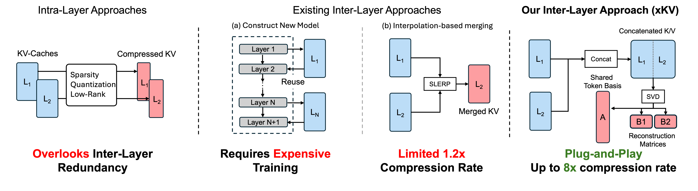
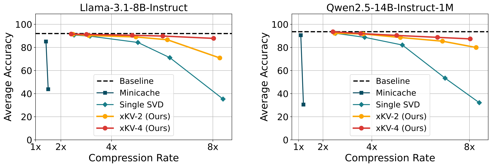
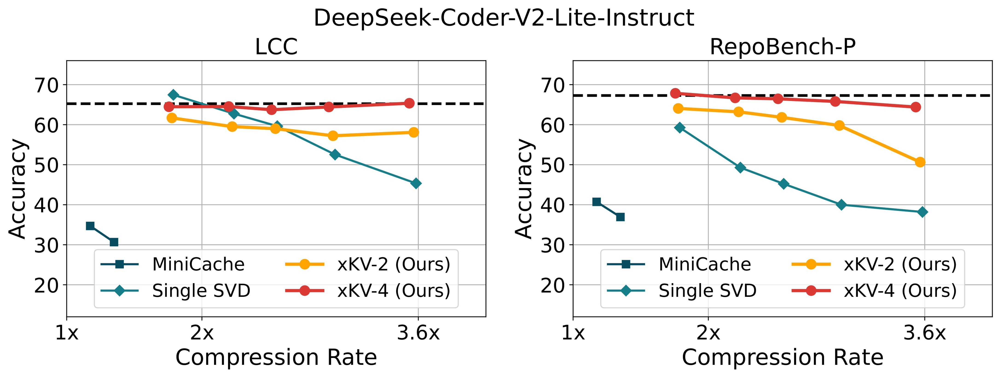

- Up to 8× KV-Cache reduction on widely-used LLMs (e.g., Llama-3.1 and Qwen2.5) while maintaining accuracy.
- 3× compression rate on coding tasks for Multi-Head Latent Attention (MLA) models (e.g., DeepSeek-Coder-V2) without performance degradation.
 Abstract
Abstract

Large Language Models (LLMs) with long context windows enable powerful applications but come at the cost of high memory consumption to store the Key and Value states (KV-Cache). Recent efforts to compress KV-Cache—such as token eviction, quantization, and low-rank decomposition—have primarily focused on intra-layer redundancies that compress each layer’s KV-Cache independently. While this often yields respectable per-layer compression, these methods do not exploit potential redundancy across layers. Moreover, attempts to merge the KV-cache from multiple layers typically require expensive training or rely on assumptions of high per-token cosine similarity, which does not generally hold in practice.
In this work, we identify that the dominant singular vectors are remarkably well-aligned across multiple layers of the KV-Cache. Leveraging this alignment, we introduce xKV, a simple post-training method that applies SVD on the KV-Cache of a group of layers. Our method consolidates the KV-Cache of multiple layers into a shared low-rank subspace, yielding a more compact KV-Cache representations.
 Highlights
Highlights

Accuracy comparison of MiniCache, applying SVD on single layer’s KV-Cache and xKV (cross-layer SVD) on Llama-3.1-8B-Instruct (left) and Qwen2.5-14B-Instruct-1M (right). Results are averaged across tasks from RULER benchmark.

Evaluation results of different KV-Cache methods on DeepSeek-Coder-V2-Lite-Instruct model.
BibTeX
@article{chang2024palu,
title={xKV: Cross-Layer SVD for KV-Cache Compression},
author={Chang, Chi-Chih and Lin, Chien-Yu and Akhauri, Yash and Lin, Wei-Cheng and Wu, Kai-Chiang and Ceze, Luis and Abdelfattah, Mohamed S.},
year={2025},
journal={arXiv preprint arXiv:2503.18893},
year={2025}
}